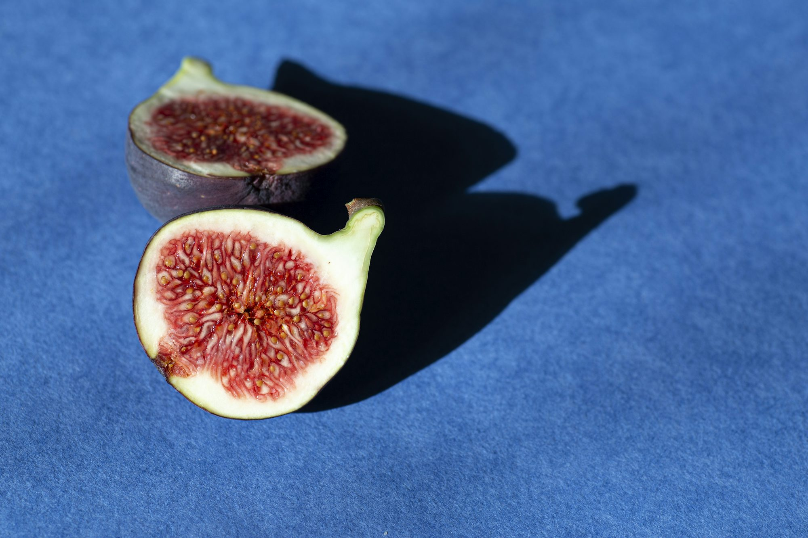

tastive.xyz
Non-veg This article Flavor Flavor explores Vegan Cuisine the Cooking fascinating Non-veg world Dining Soups Meal of Beverages craft beer, Desserts Taste covering Vegan Dining its Dish Cooking Cuisine Taste history, Dish Recipe Ingredient brewing techniques, Soups and Desserts Seafood Meal Seafood Ingredient Recipe the diverse range Vegetarian of flavors that define this popular Snacks Vegetarian Beverages Snacks beverage.
January 21, 2025